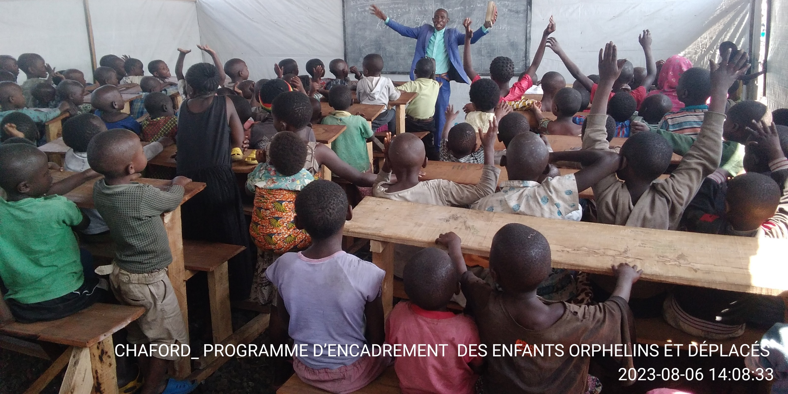
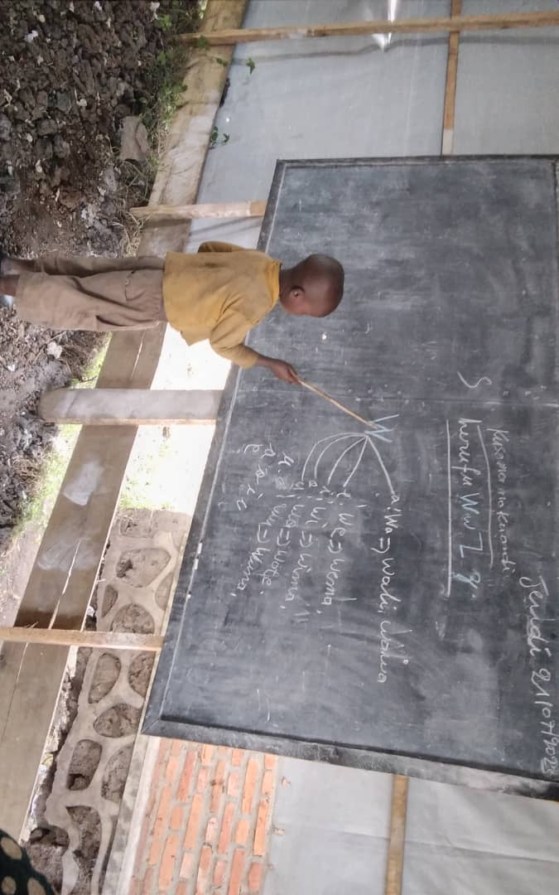
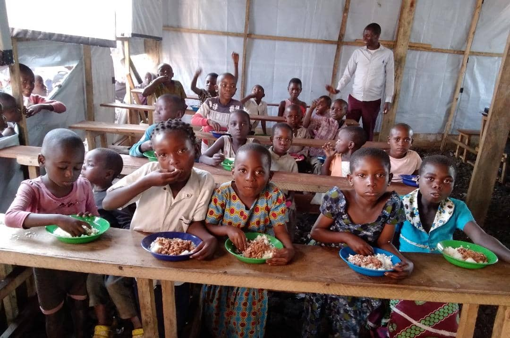

Charity For Development
Generous for a better world.
Our Work
Our mission is to promote the local development in the sub-Saharan countries.

Protection
CHAFORD has a set of activities designed to protect children in refugees camps against gender based violence, sexual exploitation and abuse. Therefore, 10 gender committees have been installed to protect and signal to the local authorities every case of violence

Education
After war and natural disaster many children, are separated from their parents and most of the parents are unable to educate their children due to poverty
CHAFORD brings education assistance to orphans, refugees and IDPs

Health and Nutrition
In refugee camps and orphanage, CHAFORD collects foods and money for parents to help them assure a good alimentation to their children. The money is raised in the fundraising campaign. Donate now
About us
Charford International, is a non profit organization created in 2023 during the war caused by M23 rebellions in the eastern region of the Republic Democratic of the Congo.
With a variety of entrepreneurial activities, in education and agrobusiness through the chaford Training center and Chaford agrobis, Chaford internatinal has other branches that help fund diverse activities designed to address specific causes of extreme poverty in communities across the subsaharian countries. These programmes are guided by these seven thematiques focus areas:
- Education
- Health and Nutrition
- Peace Building
- Gender Equality
- Emergercies
- Climate and Environment
- Evangelism
How to Help
Generosity doesn't necessarily mean financial mean, you can give your time to vulunteer, or use your talent and experience to contribute for the well being of others. Nevertheless, your financial contribution is well appreciated. !
You can also help fundraising in your community, for the Charity for orphans refugees and internal displaced people programs.
Every year, Chaford International offers three different prizes to our donors for their contributions. The certificate of recognition is given to anybody who gives their time or use their talent and experience for the well being of the most vulnerable. The golden price for generous people is offered to thank anybody who contribute financially or fund any of the CHAFORD project or Activities.
How to Donate
Equity bank 2882890002884
If Equity bank is not available in your country you can contanct our finances officers for Futher guidance, below is the contact : whatsapp, +243993101237